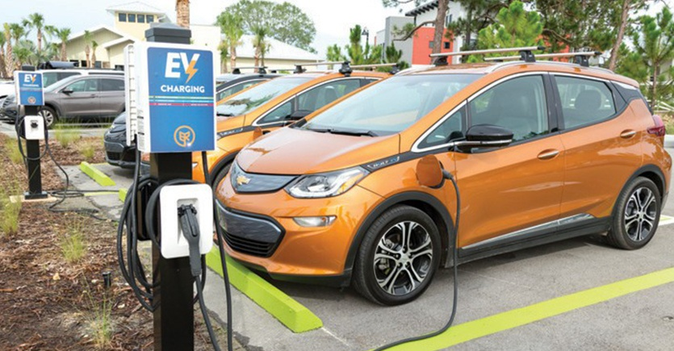
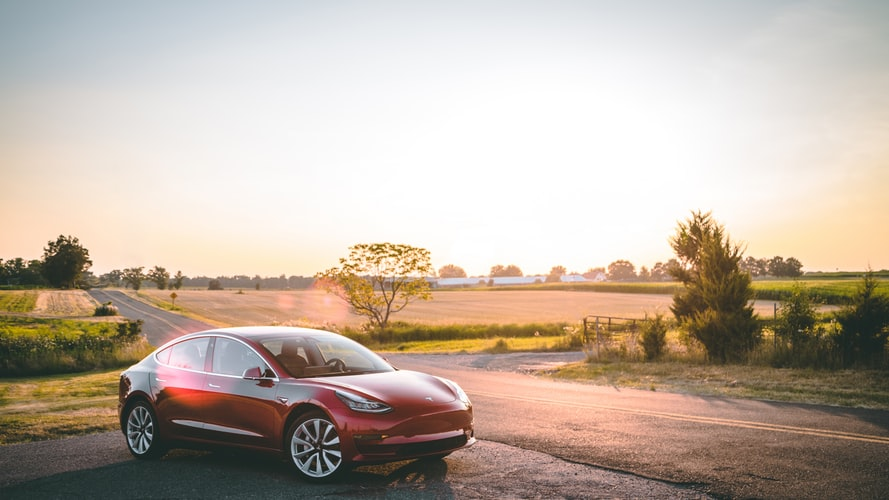

Battery electric vehicles, or BEVs, use electricity stored in a battery pack to
power an electric motor and turn the wheels. When depleted, the batteries are
recharged using grid electricity, either from a wall socket or a dedicated charging
unit. Since they don’t run on gasoline or diesel and are powered entirely by
electricity, battery electric cars and trucks are considered “all-electric” vehicles.
When driven, BEVs don’t produce tailpipe pollution—they don’t even have a tailpipe. H
owever, the electricity they use may produce heat-trapping gases and other pollution
at the source of its generation or in the extraction of fossil fuels. The amount of
pollution produced depends on how the electricity is made. In the United States,
battery electric cars charged off the dirtiest coal-dominated grid still produce less
pollution than their gasoline-powered counterparts. BEVs powered by renewable energy
sources like wind or solar are virtually emission-free.
Not using gasoline or diesel also means that battery electric cars are significantly
cheaper to fuel than conventional vehicles. Exact comparisons depend on the vehicle
model and fuel prices, but driving a BEV can save drivers over $1,000 annually in
gasoline money. For a list of BEVs, please click
HERE.

Like other electric and hybrid-electric vehicles, BEVs minimize wasted energy by
turning the car off when stopped (“idle-off”) and by charging the battery when
braking (“regenerative braking”). Electric motors are also inherently more energy-efficient
than gasoline or diesel engines.
Battery electric cars have the added benefit of home recharging. A 240-volt outlet,
similar to those used for clothes dryers, can charge a vehicle overnight. Fully-charged,
most battery electric cars have a driving range of between 70 to 100 miles, well within
the day-to-day range requirements of most Americans, though some BEVs can go up to 265
miles on a single charge. An increasing number of public and workplace charging stations
provide added charging capacity. Manufacturers are advancing battery and charging
technology. Tesla has it's own network of chargers called 'superchargers'. They are
able to, in some areas, fully charge a vehicle in under 30 minutes.
More subjectively, many drivers appreciate the driving experience provided by all-electric
cars. Electric motors generate near-instant torque, or turning-force, while the torque of
internal combustion engines increases in tandem with the engine’s revolutions (RPM). This
means that BEVs have extremely fast acceleration and a “light” or “zippy” feel compared to
conventional cars and trucks.